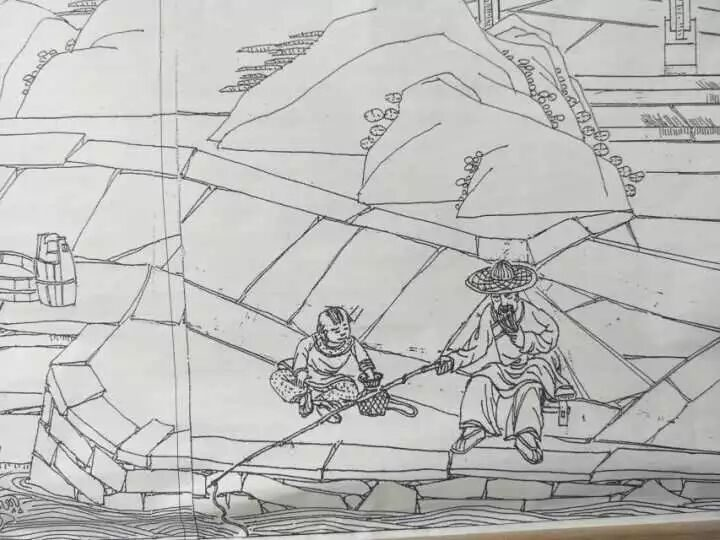
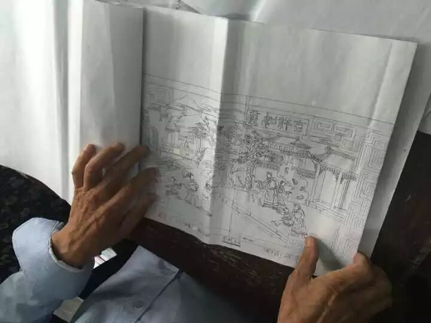

【素笺寄情·十一】拥抱行者，体味文化

【素笺寄情·十一】
拥抱行者，体味文化
生活充满了色彩，我们每个人一边走着一边在画上加上属于自己的色彩，你知道这是为什么吗？因为这就是所谓的生活，你说是吧？
And life is full of color. We each get to come along and we add our own color to the painting. You know why? Cause that’s kind of like life, right?
惊喜
生命的节奏赠与我们独一无二的人生和从无到有的惊喜。
宏村之行算是圆了多年的一个梦。对江南水乡的期盼可能还要从戴先生笔下的《雨巷》开始讲起。“油纸伞、彷徨、寂寥、丁香”，寥寥几笔就把我带入了一个雨后空气轻薄，点缀着缕缕洁白丁香的青石板巷子，美丽又结着忧愁的女子却活成了我心尖最优雅的样子。在一个初中女孩的作文里，她把自己想象成一位江南女子，浣衣汲水择菜笀鞋竹榻与心爱的人侃着家常，日出而作日落而息，尝尽天下最清澈的人间烟火。
这一天没有下雨，少了点朦胧看见的东西愈发的真切。贯穿在宏村的小巷，来往热闹，吆喝声，蝉鸣声，流水声此起彼伏。我们避开了人流密集的主路，拐进了三尺宽的小巷，这里尚未被商业模式浸染，保留了返璞归真的江南生活。南瓜藤惬意地生长在黛瓦之上，闲趣的蜻蜓自由地停歇在指尖，阿婆家门前的狗也慵懒的趴在墙背面的阴凉处，感觉时间静止，岁月静好。
路边开着一朵一朵小花，花瓣像极微笑的眼睛，我意识到自己所有的身心都沉浸在那花丛里，所有生活都聚集在此处、此时，也许那就是幸福的本身：它灿烂、宁静、出其不意，无法复制并且转瞬即逝。
艺术
美的感受是一个标志，它意味着我们邂逅了一种能够体现我们理想中优质生活的物质表现。
——阿兰·德波顿
方新中老师是一名出色的工匠，更是一位热爱生活的艺术家。他真实的表现自然却仍然充满艺术的美，他将生活中的一些动人的情节活跃在了石砖上，一些中国传统的民俗习惯在他的巧手之下被重新定义了新的生命。琴棋书画分散在一副作品的不同区域内，配置以鲜活的表情、恰当的动作，每块砖头都在讲述着它自己的故事。


方老师的艺术精神是令人感动的。他敬业，为了在最安静的时候发挥自己最大的灵感，他选择在凌晨3点起来挑灯做篆，烟灰缸中未燃尽的星星灰烬闪烁着深夜里最动人的灿烂；他坚守，他身为大国工匠仍然保持着纯良的职业道德操守，不骄不躁、激浊扬清，在这个充满戾气的社会中宛若一股醍醐灌顶的清凉。方老师的真正力量是融会于伟大情感之中的平凡，而由此而生的艺术则是世纪持久的、卓尔不凡的！
让我们大声呐喊，打破禁锢文化的樊笼，行者无疆，等你来探索！

图片｜沈华，盛暘
文案｜潘晓青
排版｜潘雯雯
审核｜应雨珊，潘雯雯